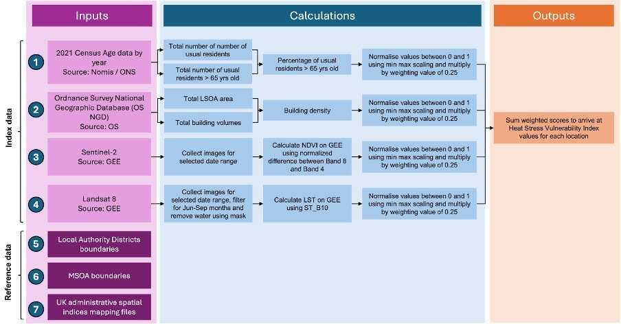

CASA0025 Group Project – Heat Stress Vulnerability Index (HSVI)
Project Summary
Fill in the sections below to provide a brief summary of your project. Each section should have no more than 100 words. Do not edit any of the headings.
Problem Statement
What is the problem you’re trying to address using this application?
Urban areas are becoming increasingly warmer than their surrounding areas known as the Urban Heat Island (UHI) effect (Wu et al., 2021). Moreover, heat stress is the leading cause of weather-related deaths and can exacerbate underlying illnesses (WHO, 2024). Studies have shown that estimates of heat-related mortality vary significantly depending on whether residents are assumed to acclimatise to local or city-wide temperatures (Shindell, 2024). Therefore, a web application that integrates temperature data, acclimatisation factors, and demographic vulnerability at a higher resolution would improve localised policy improvements and safety measures.
End User
Who are you building this application for? How does it address a need this community has?
This application is designed for various stakeholders who play a role in protecting London from extreme heat. These include governing authorities, public health bodies, and infrastructure providers. It allows users to identify heat hotspots across the city in near real-time. This improves on static snapshot data (Arup, 2024), enabling more dynamic heat risk management. The application can also be used to inform city-wide policies, and enable localised public health responses during heat waves. Finally, it can be used to evaluate how infrastructure impacts heat stress and encourage precautionary and safety measures.
Data
What data are you using?
Geospatial datasets from various sources are used: Sentinel-2 satellite imagery for NDVI (vegetation health), Landsat 8 Tier 1 for land surface temperature, Ordnance Survey for building mass density, and Nomis census data to capture old age demographics. These datasets are integrated and analysed to produce an index of heat vulnerability across urban areas.
| Layer/Factor | Dataset | Resolution | Timeframe | Link |
|---|---|---|---|---|
| Population density (elderly) | census2021-ts007-msoa.csv | Vector (MSOA) | As at 2021 | ONS Census 2021 |
| NDVI | Sentinel 2 Bands 4 and 8 | 10m | 3-4 days | Earth Engine Data Catalog Sentinel-2 |
| Temperature (LST) | Landsat 8 Surface Temperature Band 10 | 30m | 16 days ; Month filter:6-9 | Earth Engine Data Catalog Landsat 8 |
| Building height and density | Ordnance Survey National Geographic Database (OS NGD) Buildings | vector | 2025 | OS NGD Documentation |
Methodology
How are you using this data to address the problem?
This application was built using Streamlit and integrates with Google Earth Engine (GEE). Data is fetched from GEE (Sentinel-2 for vegetation, Landsat 8 for temperature), OS NGD and the UK census. The index was created by first inverting the NDVI values, since more vegetation lowers heat risk, and then scaling all datasets between 0 and 1 using MinMaxScaler before combining them. Every factor is then weighted equally at 25%, and the weighted scores are summed to generate a final Heat Stress Vulnerability Index (HSVI). The results are then presented through an interactive map, enabling stakeholders to identify areas most at risk.
Interface
How does your application’s interface work to address the needs of your end user?
The interface features a dual-panel design for HSVI calculation. The left-control panel allows users to select data aggregated at different geographic levels (LAD or council), date ranges, and map topics (overall index or specific factors like NDVI, temperature, elderly population, and building mass density). The right panel displays responsive interactive choropleth maps and bar charts showing top 10 areas needing prior actions to tackle heat stress. Users can also download CSV files for external analysis. This design helps users identify vulnerable communities and understand specific heat-risk factors, supporting future interventions.
The Application
Each time users change map layers in application, please use “Reset APP” botton to refresh the page to avoid cache problmes.
Application Website: https://casa0025-test.streamlit.app
How it Works
Use this section to explain how your application works using code blocks and text explanations (no more than 500 words excluding code):
Click here to access the repo to find Home.py which includes all codes for the application.

Vulnerable Population
Urban heat disproportionately affects segments of the population; people over the age of 65 represent the largest of these groups. We use this group as a proxy for vulnerable population groups within our application. The data used to size this group is from the UK 2021 Census. Data is aggregated at the lowest available level of aggregation (MSOA) and is summed together.
This is then divided by the total population for that location “Total Number of Usual Residents” to arrive at a Percentage of the population aged 65 and over. The rate value is used as part of the HSVI, however, in practice there are minor differences when compared to using absolute counts, so rates are preferred.
# 2️ Convert GeoDataFrame → EE FeatureCollection
if st.session_state.london_boroughs_over_65 is None:
# now we're going to add in the vector data for the london boroughs for number of people over 65 from a geojson file
# london_boroughs_over_65 = gp.read_file('data/london_percentage_of_population_over_65.geojson')#.head(10).to_crs(4326)
london_boroughs_over_65 = pd.read_parquet('data/london_percentage_of_population_over_65.parquet.gzip')
# load the lsoa level geometries
# gdf_lsoas = pd.read_parquet('data/london_lsoas_2011_mapping_file.parquet.gzip')
gdf_lsoas = pd.read_parquet('data/london_msoas_2021_mapping_file.parquet.gzip')
# convert the wkt geometry to a shapely geometry
gdf_lsoas["geometry"] = gdf_lsoas["geometry"].apply(shapely.wkt.loads)
# convert this to a geodataframe
gdf_lsoas = gp.GeoDataFrame(gdf_lsoas, geometry="geometry", crs=4326)
# filter the LAD11NM column to match the users
gdf_boroughs = gdf_lsoas[gdf_lsoas["LAD11NM"] == st.session_state.selected_council]
gdf_boroughs = gdf_boroughs[["MSOA21CD"]].rename(columns={"MSOA21CD":"geography code"})
# do a spatial join to get the vulnerable population data for the selected council
london_boroughs_over_65 = london_boroughs_over_65.merge(gdf_boroughs, on="geography code")
# convert the wkt geometry to a shapely geometry
london_boroughs_over_65["geometry"] = london_boroughs_over_65["geometry"].apply(shapely.wkt.loads)
# convert this to a geodataframe
london_boroughs_over_65 = gp.GeoDataFrame(london_boroughs_over_65, geometry="geometry", crs=4326)
# add this to session state
st.session_state.london_boroughs_over_65 = london_boroughs_over_65
else:
london_boroughs_over_65 = st.session_state.london_boroughs_over_65
# calculate the midpoint of london
london_midpoint_latitude, london_midpoint_longitude = london_boroughs_over_65.to_crs(4326).geometry.centroid.y.mean(), london_boroughs_over_65.to_crs(4326).geometry.centroid.x.mean()
# rename columns for the map
london_boroughs_over_65 = london_boroughs_over_65.rename(columns={"pct_over_65_pop":"Population over 65 %",
"total_pop_over_65_years_old":"Total Population over 65",
"total_pop":"Total Population"})
london_boroughs_over_65 = london_boroughs_over_65.drop(columns=["date","city"])
# round the % population over 65 to 2 decimal places
london_boroughs_over_65["Population over 65 %"] = (london_boroughs_over_65["Population over 65 %"] * 100).round(2)
if st.session_state.london_boroughs_over_65_map is None:
# we'll plot this on a folium map
m = london_boroughs_over_65.explore("Population over 65 %", tiles="CartoDB.Positron", cmap="Blues", scheme="Quantiles", legend_title="Population over 65", style_kwds={'weight': 1})Normalised Difference Vegetation Index (NDVI)
Healthy vegetation cools surrounding areas through shade and evapotranspiration which is why it is incorporated in the index. Healthy plants absorb red light and reflect near-infrared (NIR) light. NDVI captures the contrast between NIR and Red reflectance, allowing us to identify areas of healthy vegetation. Areas with NDVI values close to 1 indicate healthy vegetation, while low or negative values suggest sparse vegetation.
NDVI is calculated using this formula:
\[ NDVI = \frac{(NIR - Red)}{(NIR + Red)} \]
Where:
- \(NDVI\): Normalized Difference Vegetation Index
- \(NIR\): Reflectance in the Near-Infrared band
- \(Red\): Reflectance in the Red band
Sentinel-2 data was cloud-filtered and combined using the median value of the available images in GEE. NDVI values were calculated from band 4 (Red) and band 8 (Near-infrared). Then spatially aggregated by borough using a median reducer at 10m resolution.
# now we're going to use the lad data to get the NDVI
if st.session_state.gdf_results is None:
# 2️ Convert GeoDataFrame → EE FeatureCollection
ee_boroughs = geemap.geopandas_to_ee(gdf_boroughs, geodesic=False)
st.session_state.ee_boroughs = ee_boroughs
# 3️ Build Sentinel‑2 NDVI composite
sentinel = (
ee.ImageCollection('COPERNICUS/S2_SR')
.filterBounds(ee_boroughs)
.filterDate(one_year_ago, today)
.filter(ee.Filter.lt('CLOUDY_PIXEL_PERCENTAGE', 10))
.median()
.clip(ee_boroughs)
)
# this was the default code for the NDVI
ndvi = sentinel.normalizedDifference(['B8', 'B4']).rename('NDVI')
st.session_state.ndvi = ndvi
# 4️ Sum NDVI per borough
fc_results = ndvi.reduceRegions(
collection=ee_boroughs,
reducer=ee.Reducer.median(),
scale=10,
crs='EPSG:27700'
)
# 5️⃣Pull results client‑side as GeoJSON → GeoDataFrame
geojson = fc_results.getInfo()
gdf_results = gp.GeoDataFrame.from_features(geojson['features']).rename(columns={'NAME': 'MSOA Name',"median": "NDVI"})
# for ndvi we will need to invert these values
gdf_results["NDVI"] = 1 / gdf_results["NDVI"]
st.session_state.gdf_results = gdf_resultsTemperature (LST)
Land Surface Temperature (LST) represents heat energy emitted by land, buildings, and other surfaces, serving as an indirect measure of air temperature during heat waves (United States Environmental Protection Agency, 2025). Using Landsat 8 Surface Temperature Band 10 in GEE, processed LST was derived for summer months (June-September) when peak heat conditions are experienced.
We filtered out cloudy images, before applying a median reducer and a water mask excluding water bodies to focus on artificial surfaces that retain more heat, relevant to urban populations. Spatial aggregation was finally done at LSOA and Borough levels.
# load the data and apply the relevant filters and functions
#.filter(ee.Filter.calendarRange(6, 9,'month')) \ may apply a similar seasonal filter here
if st.session_state.date_range_selection == "Yes":
landsat = ee.ImageCollection('LANDSAT/LC08/C02/T1_L2') \
.filterDate(st.session_state.user_selected_start_date, st.session_state.user_selected_end_date) \
.filter(ee.Filter.calendarRange(6, 9, 'month'))\
.filterBounds(ee_boroughs) \
.filter(ee.Filter.lt("CLOUD_COVER", 15)) \
.map(applyScaleFactors) \
.select('ST_B10').map(celsius) \
.reduce(ee.Reducer.median()) \
.clip(ee_boroughs)
elif st.session_state.date_range_selection == "No":
landsat = ee.ImageCollection('LANDSAT/LC08/C02/T1_L2') \
.filterDate(one_year_ago, today) \
.filter(ee.Filter.calendarRange(6, 9, 'month'))\
.filterBounds(ee_boroughs) \
.filter(ee.Filter.lt("CLOUD_COVER", 15)) \
.map(applyScaleFactors) \
.select('ST_B10').map(celsius) \
.reduce(ee.Reducer.median()) \
.clip(ee_boroughs)
# mask out water in London to detect more accurate LST result
# Generate a water mask.
water = ee.Image("JRC/GSW1_4/GlobalSurfaceWater").select("occurrence")
notWater = water.mask().Not()
temperature_layer = landsat.updateMask(notWater)
st.session_state.temperature_layer = temperature_layer
# 4️ Sum NDVI per borough
temperature_results = temperature_layer.reduceRegions(
collection=ee_boroughs,
reducer=ee.Reducer.median(),
scale=10,
crs='EPSG:27700'
)
# 5️⃣Pull results client‑side as GeoJSON → GeoDataFrame
geojson = temperature_results.getInfo()
temperature_gdf_results = gp.GeoDataFrame.from_features(geojson['features']).rename(columns={'NAME': 'MSOA Name',"median": "surface_temperature"})Building Mass Density
Densely built environments contribute to higher heat absorption and slower cooling. Therefore, Building Mass Density (BMD) is considered as part of the Urban Heat Island (UHI) index. BMD has been calculated at both the LSOA and Borough levels.
The Ordnance Survey National Geographic Database (OS NGD) was used as the most complete and authoritative building dataset available in Great Britain. OS NGD was chosen over OpenStreetMap (OSM) due to its more comprehensive and consistent height attribution, which is sparse and unreliable in OSM (Bernard et al., 2022).
BMD was calculated using the following formula:
\[ Bmd = \frac{\sum (H_i \times A_i)}{A_{admin}} \]
Where:
- \(Bmd\): Building Mass Density
- \(H_i\): Height of building \(i\) (in metres)
- \(A_i\): Footprint area of building \(i\) (in square metres)
- \(A_{admin}\): Total area of the administrative region (in square metres)
## Process total building volumes per lsoa
# This is split into batches to prevent time out issues.
# Get list of all LSOA codes
lsoa_codes = con.execute("""
SELECT DISTINCT LSOA21CD
FROM london_lsoa;
""").fetchdf()['LSOA21CD'].tolist()
# Split into batches
batch_size = 250
batches = [lsoa_codes[i:i + batch_size] for i in range(0, len(lsoa_codes), batch_size)]
# Create the table before the loop if it doesn't exist
con.execute("""
CREATE TABLE IF NOT EXISTS london_LSOAs_vol (
LSOA21CD VARCHAR PRIMARY KEY,
borough VARCHAR,
building_count INTEGER,
total_volume DOUBLE,
geom GEOMETRY
)
""")
for batch in batches:
# Convert to SQL IN clause
code_list = ','.join(f"'{code}'" for code in batch)
# create query to insert data into new london_LSOAs_vol table
query = f"""
INSERT INTO london_LSOAs_vol
SELECT
l.LSOA21CD,
l.Borough AS borough,
COUNT(*) AS building_count,
SUM(b.volume) AS total_volume,
l.geom
FROM london_lsoa l
JOIN buildings b
ON ST_Intersects(l.geom, ST_GeomFromText(b.geometry))
WHERE l.LSOA21CD IN ({code_list})
GROUP BY l.LSOA21CD, l.geom, l.Borough;
"""
# execute the query created above
con.execute(query)
# Calculate the building mass density
# Building Mass Density = LSOA area x total building volume
# Calculate area for each LSOA (assuming CRS in meters)
con.execute("""
ALTER TABLE london_LSOAs_vol ADD COLUMN area_m2 DOUBLE;
UPDATE london_LSOAs_vol
SET area_m2 = ST_Area(geom);
""")
# Calculate building mass density for each LSOA
con.execute("""
ALTER TABLE london_LSOAs_vol ADD COLUMN building_mass_density DOUBLE;
UPDATE london_LSOAs_vol
SET building_mass_density = total_volume / area_m2;
""")Heat Stress Vulnerability Index (HSVI)
Then we combine four factors above to calculate the index:
# okay so now we're going to normalise the data values using sklearn min max scaler
scaler = MinMaxScaler()
# first we'll get the columns we want to normalise
columns_to_normalise = ["ndvi","surface_temperature","pct_over_65_pop","building_density"]
for column in columns_to_normalise:
raw_index_values_gdf_boroughs[f"{column}_normalised"] = scaler.fit_transform(raw_index_values_gdf_boroughs[[column]])
# st.write("Normalised dataframe")
# st.dataframe(raw_index_values_gdf_boroughs)
# ------------------------------------------------------------
normalised_columns = [x for x in raw_index_values_gdf_boroughs.columns if "normalised" in x]
for column in normalised_columns:
# now we're going to weight this by 25% for each of the normalised values
raw_index_values_gdf_boroughs[f"{column}_weighted"] = raw_index_values_gdf_boroughs[column] * 0.25
# st.write("Weighted dataframe")
weighted_df = raw_index_values_gdf_boroughs[["borough_name"]+[x for x in raw_index_values_gdf_boroughs.columns if "weighted" in x] + ["geometry"]]
# st.dataframe(weighted_df)
# ------------------------------------------------------------
# now lastly we're going to sum these up to get the final index values
weighted_df["index_value"] = weighted_df[[x for x in weighted_df.columns if "weighted" in x]].sum(axis=1)
weighted_columns = [x for x in weighted_df.columns if "weighted" in x]
# st.write("Final index dataframe")
# st.dataframe(weighted_df.rename(columns={"borough_name":"Location"}).drop(columns=["geometry"]))
# ------------------------------------------------------------Reference
Arup. (2024) Urban heat snapshot. Available at: https://www.arup.com/insights/publication-urban-heat-snapshot/ (Accessed: 20 April 2025).
Bernard, J. et al. (2022) ‘Estimation of missing building height in OpenStreetMap data: a French case study using GeoClimate 0.0.1’, Geoscientific Model Development, 15(19), pp. 7505–7532. Available at: (https://doi.org/10.5194/gmd-15-7505-2022).
Shindell, D., Hunter, R., Faluvegi, G., & Parsons, L (2024). ‘Premature deaths due to heat exposure: The potential effects of neighborhood-level versus city-level acclimatization within US cities’, GeoHealth, 8.
United States Environmental Protection Agency (EPA) (2025) Measuring Heat Islands. Available at: https://www.epa.gov/heatislands/measuring-heat-islands (Accessed: 25 April 2025).
Wilby, R.L. (2003). ‘Past and projected trends in London’s urban heat island’, Weather, 58: 251-260.
World Health Organization. (2024) Heat and health. Available at: https://www.who.int/news-room/fact-sheets/detail/climate-change-heat-and-health (Accessed: 20 April 2025).